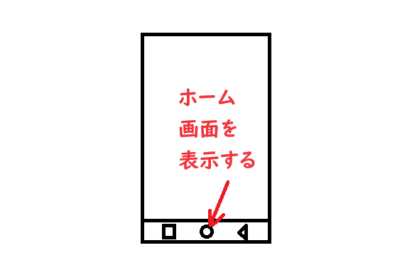

ホーム画面を表示しよう 次にホーム画面を表示します。 新規アプリを開きたい時は ホーム画面から開くため この操作は覚える必要があります。 ホーム画面に戻ってから 起動中のアプリを再度開く場合は 前の項目で習得した アプリ一覧画面で開きます。 スマホの画面の下の 〇を押して ホーム画面を開いて下さい。 ホーム画面を開いたら スマホの画面の下の □を押して アプリ一覧画面を出して この画面を開きなおして下さい。 
<< 前へ
次へ >>